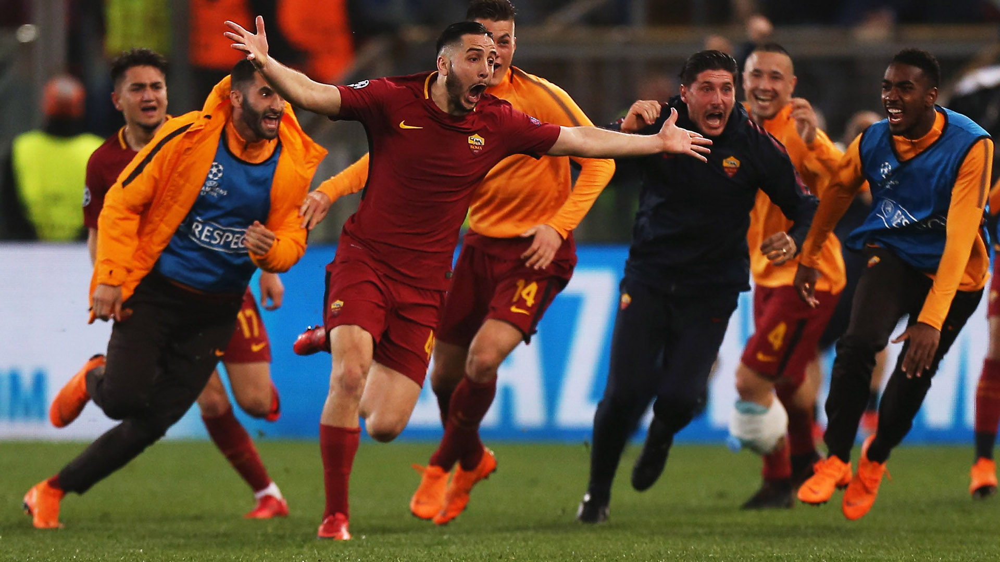

A.S. Roma is an italian football club that was founded in 1927, and is based on three different Rome-based clubs. Roman FC, SS Alba-Audace and Fortitudo-Pro Roma SGS collabed together in order to build a strong club to rival the stronger nothern clubs at the time. Roma have won the Scudetto three times to date, 1942, 1982, and 2001 but have struggled to win since despite finishing second a numerous amount of times.
Roma's first title win in 1942-1943 was a little unexpected, but the 18 goals from local hero Amedeo Amadei were vital to the side winning the title.
Roma after that scudetto win were not able to keep results consistent,and as a result of that fell to the lower half of the table for five seasons in a row. Eventually being relegated to Italy's second tier, Serie B, at the end of the 1950-1951 season. But their stay in the second tier did not last long as promotion back up was earned right away and there were back in the top flight after only a year away.
Roma's second Scudetto triumph came 41 years after the first, in the 1982-1983 season. Roma finished 4 points above runners-up Juventus with 43 points that season, with Roberto Pruzzo getting 12 goals and finishing top scorer for the club that season.
Roma's final scudetto triumph to date came in 2001 when they beat Parma to win the Scudetto on the last day of the season, with the likes of Batigol, Totti, and Montella leading them to glory.
When you hear "Roma" a certain name comes to mind and that is no other than club legend Francesco Totti. Totti spent his whole 25 year career at his boyhood club and even carrying them to a Scudetto win in 2001 and two Coppa Italia wins in 2007 and 2008. Totti is Roma's all time scorer, scoring 307goals, as well as the player with the most apperances at the club with a staggering 786 games played for them. Totti was one of the most talented players in the world in his prime, and chose to stay at Roma even when the big dogs came calling. The loyalty he showed is why Romans consider him a god and gave him the iconic name "Il Capitano".
It was an emotional goodbye in 2017 when he left but the club captaincy was taken over by Daniele De Rossi. De Rossi had been there for 16 years before taking over as club captain. De Rossi's nickname "Capitano Futuro" was no more and that name was now the name for Alessandro Folrenzi, who is now club captian after De Rossi's farewell in May of 2019. De Rossi has now taken up the oppurtunity to realize his second dream, playing in Argentina with Boca Juniors. He may not be a "one club man" like his compatriot Totti but he will live in the memories of Roma fans as if he was.
Another big name in the Roma history books is Bruno Conti. One of many young Romans to come through their academy and play for the first team. He made his debut in 1973 and immedietly became an important figure on the wing, bearing the number 7 shirt. He won the Scudetto with his boyhood club in 1982-1983 and five Coppa Italia titles, but there were also bad memories for Conti as in the 1984 European Cup final, in Roma's stadium, he saw his team lose on penalties to Liverpool. To add insult to injury, he skied his penalty over the crossbar, which eventually led the Reds to claim the title. Conti is now still at Roma but a part of the Youth team administration after retiring in 1991. He also briefly caoched the first team from March to June 2005 before the club appointed Luciano Spalletti, and was also inducted in to the A.S. Roma Hall of Fame in 2012.
A.S. Roma has produced some great memories along the year but along the many memories one stands out, and that is when Roma beat Parma to win their second Scudetto. If Roma wanted to win their 3rd scudetto then they would have to get passed Parma, who had the likes of future Jeventus and Azzuri legend Gianluigi Buffon, Marco Di Vaio, and other big names. Roma however, had there own firepower, club legend Francesco Totti led the attack alongside club leading scorer for the season Gabriel Batistuta, or Batigol, and Vincenzo Montella.The three had were lethal that season scoring a combined 46 goals in the Serie A. Totti opened the scoring in the 19th minute as Rome started to celebrate. Montella hit a second twenty minutes later to double the Giallrossi's lead, then Batistuta sent the fans into heaven when he put the ball in the back of the net for 3-0. Parma got to celebrate once, as Di Vaio slotted home a consolation goal for the visitors, but that did not stop the Romans from invading the pitch to celebrate their teams victory, as Roma edged Juventus by two points to secure the title.
Another memory that will live forever and the ones the Roma fans will remember the most is Roma's amazing 3-0 comeback in the Champions League vs. Barcelona in 2018. Roma ,who were the underdogs, had been trailing 4-1 from the first leg and had to produce an absolute miracle to progress, and they did just that. It took just six minutes for them to get things underway as De Rossi played in a long through ball for striker Edin Dzeko to poke home from 8 yards out. The Stadio Olimpico was starting to dream, could this really happen?Could we do the impossible? The second goal came in the 58th minute when Gerard Pique pulled down Edin Dzeko in the box for a penalty. Up stepped the captain De Rossi to bury the penalty and get Roma one goal away from greatness. The final goal, the one to complete the miracle, came in the 82nd minute courtesy of defender Kostas Manolas. Winger Congiz Under whipped a corner in towards the near post and there was the defender to head it home and send Rome into pandemonium. All 60,000 fans who wore the colours of the Giallorossi erupted and now Roma were 8 mintues away, 8 minutes from producing a memory no Roma fan will ever forget. The final whistle blew and Rome erupted with cheers, fans singing the night away, even Roma president James Palotta got in with the celebrations by throwing himself into the Piazza del Popolo fountain.
Want more? Visit A.S. Roma's official site, Associazione Sportiva Roma.
THIS WEBSITE IS FOR EDUCATIONAL PURPOSES ONLY.